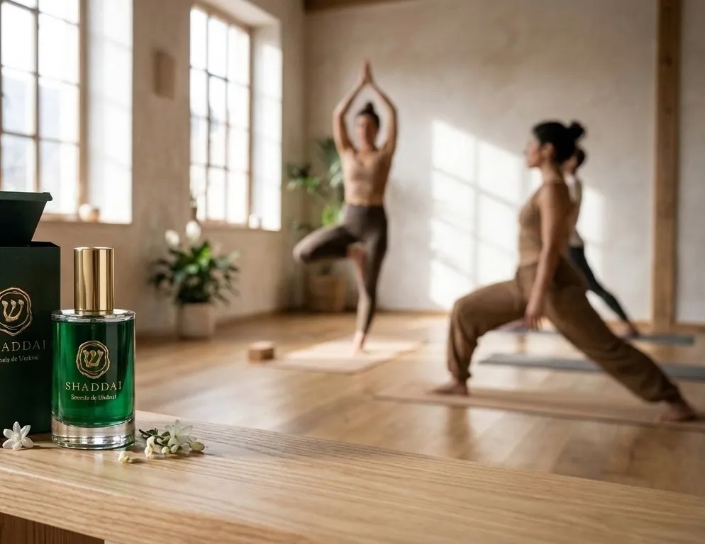
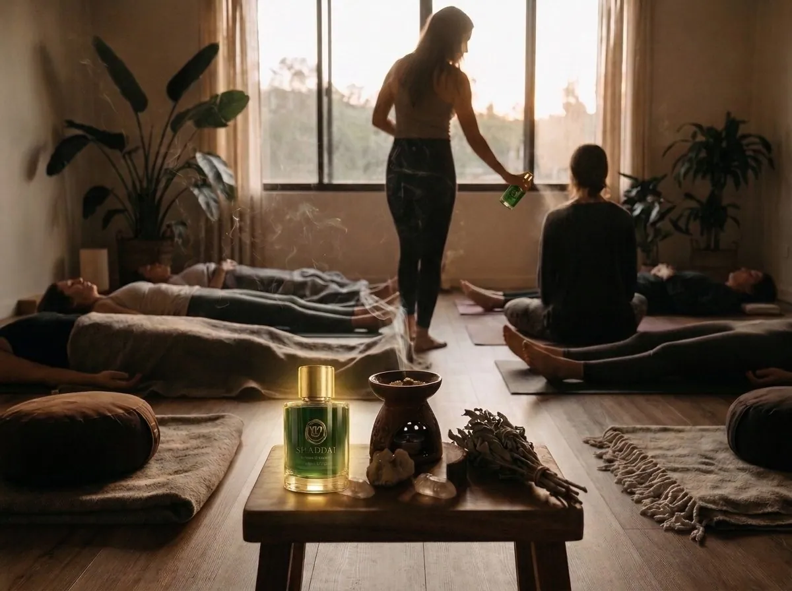
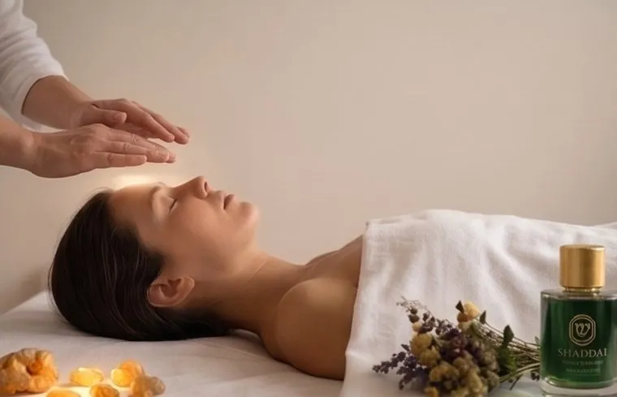
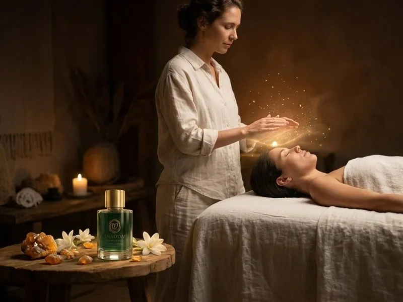
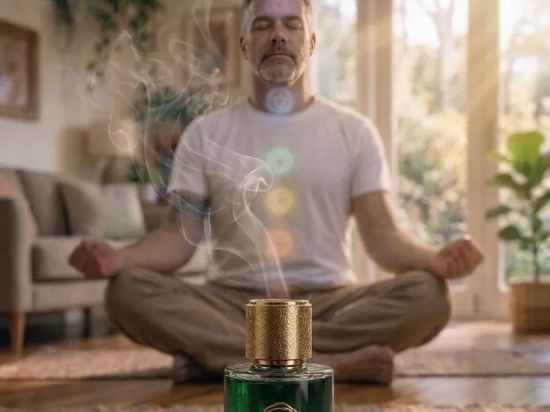
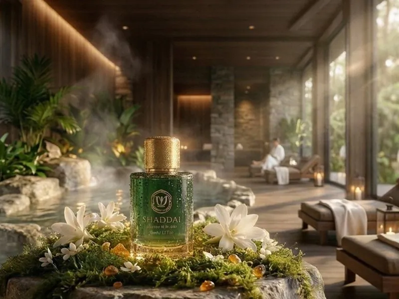
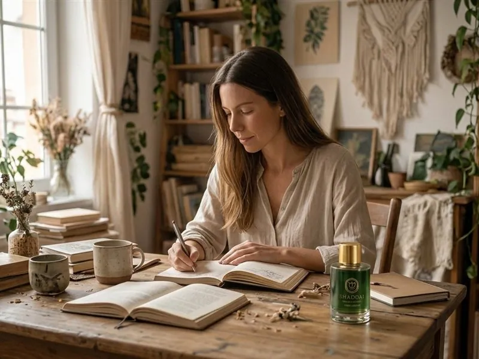

Un ancla olfativa
Del ruido a la presencia
SHADDAI no es solo un perfume; es un puente olfativo diseñado para marcar el paso del ruido exterior a la presencia interior.
A través de sus notas resino-balsámicas ancestrales, actúa como una ancla neurosensorial que invita al cuerpo a pausar, respirar y sostener el momento presente.

Centros de Yoga y Prácticas Somáticas
Instante de uso — en la apertura o en la fase final de integración (Savasana).
Aplicado en el espacio o en los puntos de pulso antes del inicio de la sesión, SHADDAI ayuda a delimitar el “umbral” de la práctica, invitando a los alumnos a desconectar de la rutina diaria y conectar de inmediato con el cuerpo y la respiración consciente.

Meditación Profunda y Exploración Interior
Instante de uso — previo a sentarse en cojín o banqueta de meditación.
Un gesto de aplicación consciente (inhalación profunda en palmas o inhalación desde el frasco) actúa como un detonante sensorial que predispone la mente a la calma, facilitando estados de concentración y silencio interior.

Armonización Energética
Instante de uso — durante lecturas, testeo (péndulo) o centros energéticos.
Sus notas resinosas (incienso, mirra, ámbar) se han utilizado tradicionalmente por su alta frecuencia vibracional. Favorece la limpieza del aura y ayuda a equilibrar los centros de energía principales: el chakra raíz para el anclaje y el corona para la conexión espiritual.

Reiki y Terapias Energéticas
Instante de uso — al inicio, para preparar el espacio sagrado, o al finalizar, para sellar el campo energético.
Eleva la atmósfera de la consulta, permitiendo que terapeuta y consultante entren en un estado de coherencia, soltando densidades emocionales y facilitando la recepción de la energía sutil.
Hipnosis, Sofrología y Estados Ampliados
Instante de uso — durante la inducción o la preparación al trance y la relajación guiada.
Actúa como un anclaje olfativo de seguridad y profundidad. La memoria olfativa, directa al sistema límbico, ayuda a bajar la frecuencia de la onda cerebral y facilita el tránsito hacia estados profundos de relajación e introspección.

Ayuda a Equilibrar los Chakras
Instante de uso — en pausas conscientes, meditación chakra a chakra o antes de dormir.
Su estela de incienso y mirra acompaña la visualización de cada centro, desde la raíz hasta la coronilla: cada inhalación sostiene la concentración, disuelve las densidades acumuladas y devuelve al circuito energético su fluidez natural, dejando el cuerpo sereno y la mente despejada.
Naturopatía, Bioresonancia y Terapias Naturales
Como elemento de acogida en consulta para predisponer al paciente a un diálogo abierto y sereno, neutralizando el estrés antes de realizar pruebas o diagnósticos.

Spas, Masaje y Santuarios Wellness
Crea una firma olfativa (olfactive branding) en la sala de tratamiento que prepara la musculatura y el sistema nervioso para recibir el masaje, induciendo una respuesta inmediata de bienestar.

Espacios Creativos, Lectura y Escritura
Para profesionales o creadores que buscan enfocar su mente, disipar la fatiga mental y acceder a estados de flujo (flow state).